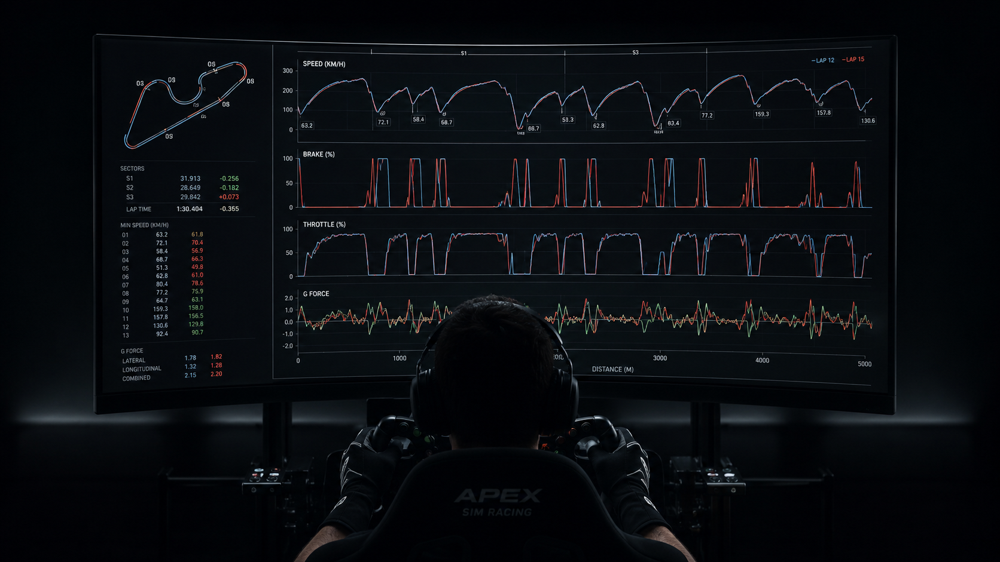

ASÍ SE ANALIZA UNA VUELTA EN APEX
Explorá las mismas variables que utilizan nuestros coaches para detectar pérdidas de tiempo y construir un plan de mejora.

Mapa del circuito
Visualizá la pista con los sectores S1, S2 y S3 diferenciados. Identificá en qué zona de la pista se producen las diferencias de tiempo.
Tiempos por sector
Comparación de S1, S2 y S3 entre vueltas. Los valores en rojo indican pérdida de tiempo; los verdes, ganancia respecto a la vuelta de referencia.
Velocidad (km/h)
Curva de velocidad a lo largo de la vuelta. Compará el perfil entre dos vueltas para detectar diferencias en puntos de frenada y aceleración.
Freno (%)
Intensidad y duración de cada frenada. Permite ver si el piloto frena antes, más fuerte o libera el freno de forma diferente en cada vuelta.
Acelerador (%)
Apertura del acelerador en cada punto del circuito. Revela la suavidad y el timing de la aplicación de potencia en la salida de curva.
Fuerzas G
Fuerzas laterales, longitudinales y combinadas. Muestran la carga que experimenta el piloto y cómo el auto trabaja en cada fase de la curva.